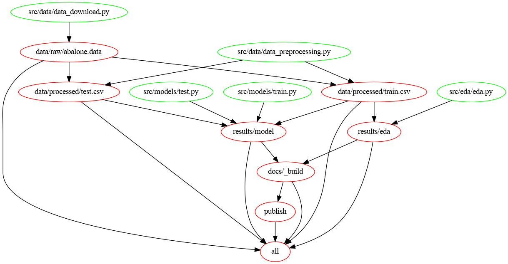
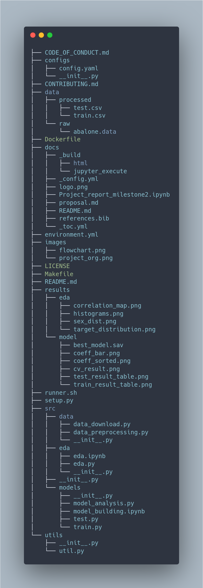

Abalone Age Classifier¶
Data analysis project for DSCI 522 (Data Science workflows); a course in the Master of Data Science program at the University of British Columbia.
Authors¶
Nick Lisheng Mao
Beilin Wu (Lynn)
Kiran Phaterpekar
Rakesh Pandey
Introduction¶
Abalones are endangered marine snails that are found in the cold coastal water around the world. The price of an abalone is positively associated with its age. However, determining how old an abalone is a very complex process.
In this project we are classifying abalone snails into “young” and “old” according to their number of rings based on input features such as abalone’s gender, height with meat in shell, weight of the shell etc.
About Data Set and Analysis¶
The Abalone data set that was used in this project was sourced from the UC Irvine Machine Learning Repository published in 1995. It can be found here. Each row in the data set represents the attributes and physical measurements of abalones including number of rings, sex, length, diameter, height, weight, etc. The number of rings were counted manually using a microscope by the researchers. The age of an abalone is represented by its number of rings plus 1.5 as number of years lived. The data set has already removed its missing values and the range of the continuous values have been scaled for use with an ANN (by dividing by 200).
In the research paper “A Quantitative Comparison of Dystal and Backpropagation” that David Clark, Zoltan Schreter and Anthony Adams submitted to the Australian Conference on Neural Networks (ACNN’96), the original abalone data set was treated as a 3-category classification problem (grouping ring classes 1-8, 9 and 10, and 11 on). In our project, we will treat the data set as a 2-categorical classification problem (grouping ring classes less or equal to 11, and more than 11).
Here, we aim to answer one research question with a Logistic Regression classification model:
Given the input features (sex, longest shell measurement, diameter perpendicular to length, height with meat in shell, whole weight, weight of meat, gut weight after bleeding, shell weight after being dried), is an abalone young (i.e. number of rings smaller than or equal to 11), or old (i.e. number of rings is larger than 11)?
To perform this analysis, first, after the data download, we split the data into train set and test set, perform data wrangling, and perform EDA on the train set features to investigate the relationships between the independent variables used in our model. We then preprocess the data including scaling the numerical features and one-hot-encoding the categorical feature. Next, we fit a Logistic Regression classification model on the data set, tune hyperparameters and evaluate the best performing model on the test set. The final step is creating a full report that shares the analysis results, as structured below.
Report¶
The final report can be found here. The final analysis report consists of the following components: summary, introduction, methods including data and analysis, results/discussion, future analysis directions/takeaway and references.
Usage¶
Option 1: Using docker¶
To run this analysis using Docker, clone/download this repository, use the command line to navigate to the root of this project on your computer, and then type the following (filling in PATH_ON_YOUR_COMPUTER with the absolute path to the root of this project on your computer).
# Clean output directories and results
docker run --rm -v /$(pwd):/home/abalone veerupandey/abalone_age_classification make -C /home/abalone clean
# Run the Analysis
# Flag `--it` is here for a purpose
docker run --rm -it -p 8000:8000 -v /$(pwd):/home/abalone veerupandey/abalone_age_classification make -C /home/abalone all
As a simple python webserver will be started at port 8000 to serve analysis html web page, flag -it will help to debug and close the session. Docker can also run in detach mode with flag -d.
docker run --rm -d -p 8000:8000 -v /$(pwd):/home/abalone veerupandey/abalone_age_classification make -C /home/abalone all
Report can be accessed in local machine by accessing http://localhost:8000 in any of the modern web browser.
Option 2: Using make¶
Create project environment¶
Project python environment needs to be created before running the analysis. Run the command mentioned below from project root directory.
make create_env
conda activate abalone
Note: If you are on Windows, you might have to run following commands to make the altair and altair_saver work as expected.
npm install -g vega vega-cli vega-lite canvas
Run analysis end to end¶
To run the analysis end to end, run the following commands in a Terminal/Command Prompt from the project root directory.
make clean # to clean the analysis output files
make all # to reproduce the analysis end to end
make all publishes the report on localhost. Report can be accessed in local machine by accessing http://localhost:8000 in any of the modern web browser.
In case report has to be published to git pages, following command should be used in defiance of make all.
make clean # to clean the analysis output files
make all_git_publish # to reproduce the analysis end to end and publish to git pages
Individual steps can also be executed using make command. For example - following command runs data_download.py script and save the output file to disk. To see all the targets/steps, please refer the Makefile.
make data/raw/abalone.data
Please clean the target directories before invoking make command. make clean can be used to clean all the intermediate files and results.
Option 3: Using runner.sh¶
Python environment must be created and activated before running runner.sh. To create the environment, use the following command.
conda env create -f environment.yml
conda activate abalone
To run the analysis end to end, run the script runner.sh in a Terminal/Command Prompt from the project root directory as follows. Script runner.sh runs each individual script one at a time.
nohup bash runner.sh > runner.log &
Log file runner.log logs all the steps and can be used for debugging the script.
Flow Chart¶

Project Structure¶

Dependencies¶
A environment file environment.yml of dependencies can be found here. As project develops, this yaml file is subjected to change.
License¶
This dataset is licensed under a Creative Commons Attribution 4.0 International (CC BY 4.0) license. This allows for the sharing and adaptation of the datasets for any purpose, provided that the appropriate credit is given.
References¶
- And99
Neil L. Andrew. Under Southern Seas: The Ecology of Australia's Rocky Reefs. UNSW Press, 1999.
- CSA96
David Clark, Zoltan Schreter, and Anthony Adams. A quantitative comparison of dystal and backpropagation. In Australian conference on neural networks. 1996.
- DG19a
D Dua and C Graff. Uci machine learning repository [http://archive. ics. uci. edu/ml]. irvine, ca: university of california, school of information and computer science. failure to detect type 2 diabetes early costing $700 million per year, diabetes australia, 8 july 2018. Google Scholar, 2019.
- DG19b
Dheeru Dua and Casey Graff. UCI machine learning repository. 2019. URL: http://archive.ics.uci.edu/ml.
- NST+94
Warwick J Nash, Tracy L Sellers, Simon R Talbot, Andrew J Cawthorn, and Wes B Ford. The population biology of abalone (haliotis species) in tasmania. i. blacklip abalone (h. rubra) from the north coast and islands of bass strait. Sea Fisheries Division, Technical Report, 48:p411, 1994.
- PythonCTeam19
Python Core Team. Python: A dynamic, open source programming language. Python Software Foundation, 2019. Python version 2.7. URL: https://www.python.org/.
- RCTeam21
R Core Team. R: A Language and Environment for Statistical Computing. R Foundation for Statistical Computing, Vienna, Austria, 2021. URL: https://www.R-project.org/.